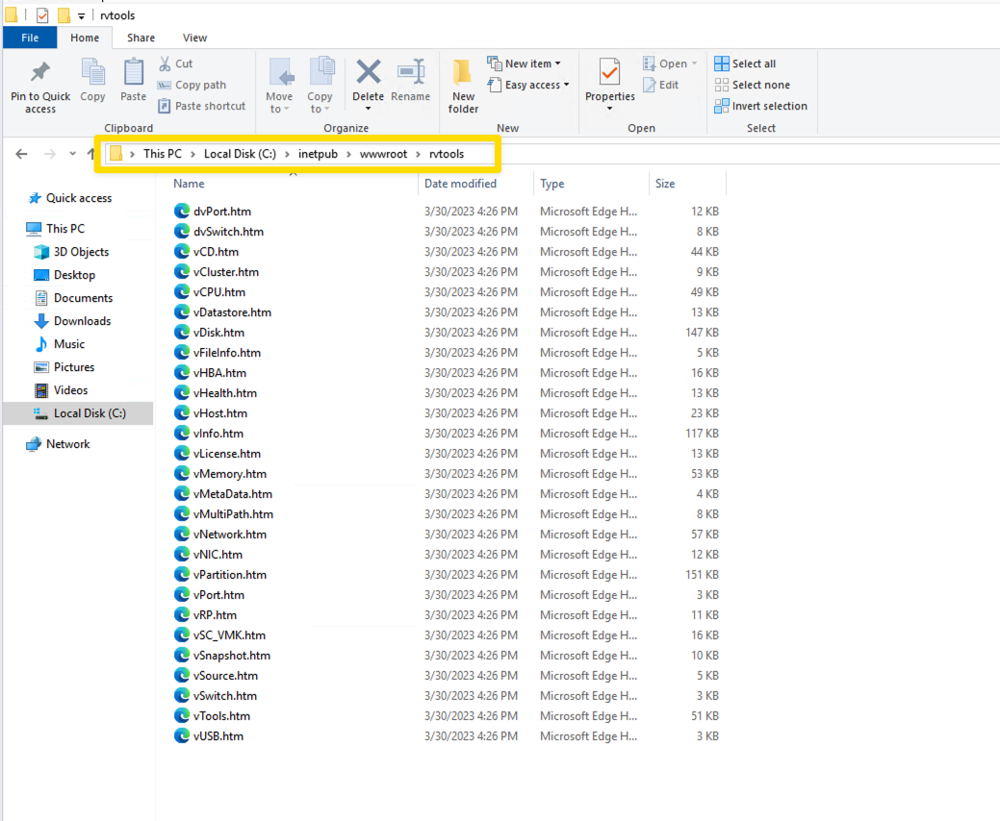
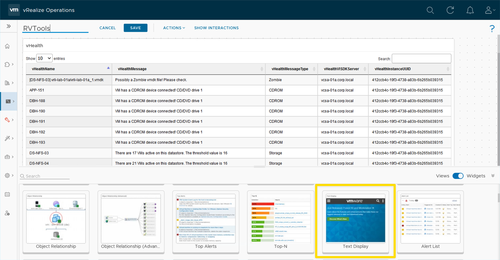
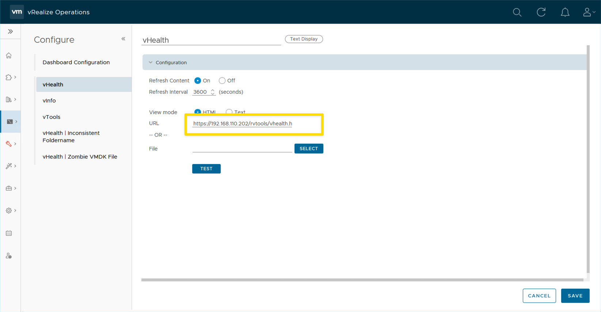

VMware Aria Operations | RVTools Dashboard

How to show RVTools data in a VMware Aria Operations Dashboard.
I know a lot of VMware admins that use RVTools on a regular basis. RVTools was #1 on the VMware Tools list on vSpeaking Podcast Episode 108. When I was a VMware Customer, I used RVTools for 10+ years.
Recently I was asked how to see some of the data that RVTools generates in a VMware Aria Operations Dashboard. Some of the data displayed in the RVTools vHealth Worksheet is not a metric or property that VMware Aria Operations collects or generates. The company uses VMware Aria Operations for all monitoring and thought it would be nice to see this additional data in a VMware Aria Operations Dashboard. They would auto generate the RVTools files everyday, but it was additional steps to open the generated spreadsheet file, plus they had to remember to go look at the RVTools data. If the RVTools data was in a Dashboard, they thought it would be easier to see and wouldn't have to remember to go look at the data. They would make the RVTools Dashboard a favorite in VMware Aria Operations and look at the data everyday.
If you don't use RVTools today, take some time and review it. There are some good use cases for using the product. Awesome to see a Product developed by a VMware admin to make his life easier, and then shared and used by over a million people within the vCommunity.
Use Case
- Customer used RVTools to see data about their VMware environment.
- Customer used VMware Aria Operations for all monitoring.
- Customer wanted to have a VMware Aria Operations Dashboard that showed RVTools data to create a "Single Pane of Glass" experience.
Steps to complete the process:
- [x] Automate the process to generate the RVTools xlsx file everyday.
- [x] Generate html files from the RVTools xlsx file, to display in a VMware Aria Operations Dashboard.
- [x] Need access to a Web Server of your choice to save the html files. The files are static, so any flavor of web server will work.
RVTools vHealth data in a VMware Aria Operations Dashboard:
- Screen shot of Dashboard

PowerShell Script:
- The script was created to be dynamic. No worksheet names or field names are hard coded. If new Worksheets or fields are added to RVTools in the future, they will automatically be picked up with this script.
- RVTools provides a program to encrypt your password that will be used with the script. The program is named "RVToolsPasswordEncryption.exe".
- The PowerShell Script uses the importexcel PowerShell Module to see the data in the RVTools xlsx file. If you have never used the importexcel module, please review to see if you would have other use cases. No need to have Excel Installed. Works Awesome, one of my Favorite PowerShell Modules. Thanks Doug Finke
- Click to expand PowerShell code
# Created By: Dale Hassinger
# Blog Site: www.vCROCS.info
# Notes:
# This script uses the importexcel powershell module
# find-module importexcel
# install-module importexcel
# Script Description: Creates RVTools xlsx file and creates a web page for every worksheet.
# ----- [ Function to Create the HTML Files ] -----
function Create-HTML{
param(
[parameter(mandatory = $true)]
[string]$workSheet
) # End param
#$workSheet = 'vHealth'
$vTools = Import-Excel -Path "C:\RVTools\RVTools-Data.xlsx" -WorksheetName $workSheet
#$vTools
# -- Get the Header info for the specifc worksheet
$tableHeaders = ($vTools[0].psobject.Properties).name
#$tableHeaders
# -- Build the Table Header
$tableHeader = @'
'@
foreach($field in $tableHeaders){
$outPut = ' <th>' + $field + '</th>'
$tableHeader += "$output" + "`n"
#Write-Output $tableHeader
}
#$tableHeader
# -- Start creating the HTML file
$htmlFile = @'
<!DOCTYPE html>
<html>
<head>
<meta charset="UTF-8">
<title>PageTitle</title>
<!-- Include the required stylesheets and scripts -->
<link rel="stylesheet" type="text/css" href="https://cdn.datatables.net/1.10.25/css/jquery.dataTables.min.css">
<script type="text/javascript" src="https://code.jquery.com/jquery-3.6.0.min.js"></script>
<script type="text/javascript" src="https://cdn.datatables.net/1.10.25/js/jquery.dataTables.min.js"></script>
<!-- CSS rules to control the font -->
<style type="text/css">
body {
font-family: Arial, sans-serif;
font-size: 11px;
}
table {
font-family: Arial, sans-serif;
font-size: 11px;
border-collapse: collapse;
width: 100%;
}
th, td {
padding: 8px;
text-align: left;
border: 1px solid #ddd;
}
th {
background-color: #f2f2f2;
}
</style>
<!-- Initialize the DataTables plugin -->
<script type="text/javascript">
$(document).ready(function() {
$('#example').DataTable({
scrollX: true, // enable horizontal scrolling
order: [[ 0, "asc" ]], // sort by the first column in ascending order by default
searching: true // enable searching
});
});
</script>
</head>
<body>
<table id="example" class="display" style="width:100%">
<thead>
<tr>
'@
# -- Create HTML Page Title
$pageTitle = 'RVTools | ' + $workSheet
$htmlFile = $htmlFile.Replace("PageTitle",$pageTitle)
# -- Add Table Header to HTML File
$htmlFile += $tableHeader
$htmlHeader2 = @'
</tr>
</thead>
<tbody>
'@
$htmlFile += $htmlHeader2
# -- Create HTML Table
$table = @'
'@
foreach($record in $vTools){
$output = ' <tr>'
foreach($field in $tableHeaders){
$output += '<td>' + $record.$field + '</td>'
#Write-Output $tableHeader
}
$output += '</tr>'
#Write-Output $output
$table += "$output" + "`n"
}
#$table
# -- Add Table to HTML File
#$table
$htmlFile += $table
#$htmlFile
# -- Create HTML Footer
$htmlFooter = @'
</tbody>
</table>
</body>
</html>
'@
#$htmlFooter
# -- Add HTML Footer
$htmlFile += $htmlFooter
#$htmlFile
# -- Create the HTML file in the Web Server folder
$filePath = 'C:\inetpub\wwwroot\rvtools\' + $workSheet + '.htm'
$htmlFile | Out-File -FilePath $filePath
} # End Function
# ----- [ Run RVTools and create the xlsx file ] -----
# -- Set RVTools path
[string] $RVToolsPath = "C:\RVTools"
# -- cd to RVTools directory
set-location $RVToolsPath
# -- Set parameters for vCenter and start RVTools export
[string] $VCServer = "vcsa-01a.corp.local" # my test vCenter server
[string] $User = "administrator@corp.local" # or use -passthroughAuth
[string] $EncryptedPassword = "_RVToolsV2PWDasF30QqSuq9OjfEwP+zMeR93x/p511QbI9SZl9YvUJw=" # use RVToolsPasswordEncryption.exe to encrypt your password
[string] $XlsxDir = "C:\RVTools"
[string] $XlsxFile = "RVTools-Data.xlsx"
# -- Start cli of RVTools
Write-Host "Start export for vCenter $VCServer" -ForegroundColor DarkYellow
$Arguments = "-u $User -p $EncryptedPassword -s $VCServer -c ExportAll2xlsx -d $XlsxDir -f $XlsxFile -DBColumnNames"
#Write-Host $Arguments
$Process = Start-Process -FilePath "C:\RVTools\RVTools.exe" -ArgumentList $Arguments -Wait -PassThru #-NoNewWindow
if($Process.ExitCode -eq -1)
{
Write-Host "Error: Export failed! RVTools returned exitcode -1, probably a connection error! Script is stopped" -ForegroundColor Red
exit 1
} # End If
# ----- [ Get Name of every Worksheet in xlsx file and send to function to create html files ] -----
$worksheetNames = Get-ExcelSheetInfo 'C:\RVTools\RVTools-Data.xlsx'
foreach($workSheet in $worksheetNames.Name){
$output = 'WorkSheet: ' + $workSheet
Write-Output $output
Create-HTML -workSheet $workSheet
} # End Foreach
Results of script:
- For my example, I am using a Windows Server and IIs Web Server.
- All html files are saved in the folder C:\inetpub\wwwroot\rvtools\ on the IIS Server.
- A html file is created for ever Worksheet within the xlsx file.

VMware Aria Operation Dashboard Design:
- Use the Text Display Widget to show the results of a html within the Dashboard.
- Add a Text Display Widget for every Worksheet that you want to display within the Dashboard.
- Add the url to the Text Display Widget. You MUST use a secure url. IE: https://192.168.110.202/rvtools/vHealth.htm


How to run the script everyday?:
- I use a Workflow within VMware Aria Automation Orchestrator that is built-in to VMware Aria Automation. You can also you a stand alone VMware Aria Automation Orchestrator install if you don't use VMware Aria Automation.
- There is a OOTB (Out of the Box) Workflow that allows you to run a PowerShell script on a PowerShell Host. I clone that Workflow and edit to match my environment.
- I schedule the Workflow to run everyday at 5:00 am.
Lessons Learned
- The Text Display Widget is a nice way to display data in a VMware Aria Operations Dashboard from any html file.
- Using the Text Display Widget allows you to create that "Single Pane of Glass" experience with VMware Aria Operations.
When I write about Automation, I always say there are many ways to accomplish the same task. This article is just one way that you could accomplish this task. I am showing what I felt was a good way to complete the use case but every organization/environment will be different. There is no right or wrong way to complete automation as long as it completes successfully and consistently.
- If you found this Blog article useful and it helped you, Buy me a coffee to start my day.